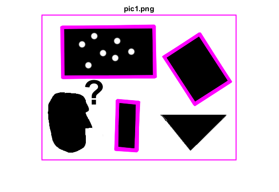
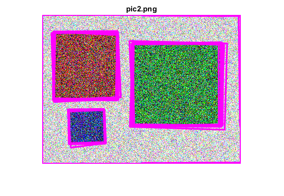
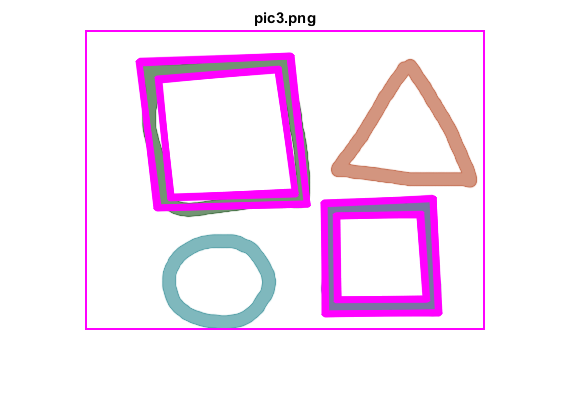
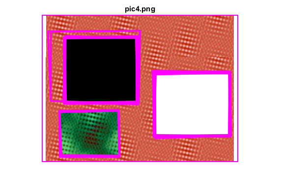
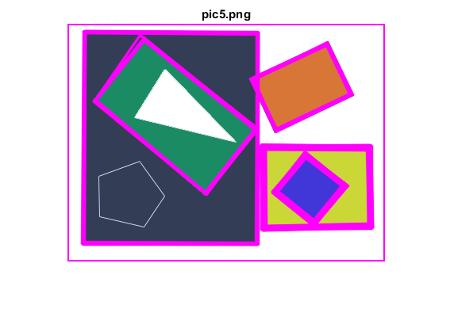
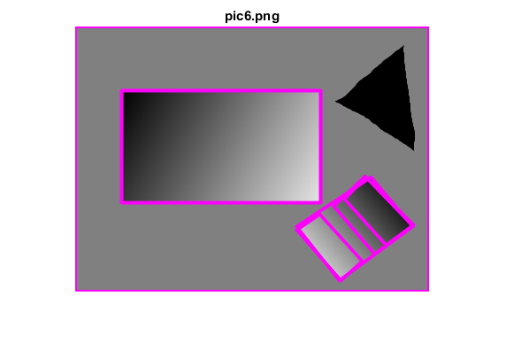

Contents
Squares Detector
It loads several images sequentially and tries to find squares in each image.
A program using pyramid scaling, Canny, contours, and contour simpification (it's got it all folks) to find squares in a list of images pic*.png. Returns sequence of squares detected on the image.
Sources:
function squares_detector_demo()loop over sequence of images
names = cv.glob(fullfile(mexopencv.root(), 'test', 'pic*.png')); for i=1:numel(names)
load image
img = cv.imread(names{i}, 'Color',true);find and draw squares (TODO: apply something like groupRectangles)
squares = findSquares(img);
if true
img = cv.polylines(img, squares, 'Closed',true, ...
'Color',[255 0 255], 'Thickness',2, 'LineType','AA');
else
img = cv.drawContours(img, squares, ...
'Color',[255 0 255], 'Thickness',2, 'LineType','AA');
endshow result
[~,fname,ext] = fileparts(names{i});
figure, imshow(img), title([fname ext]) endendHelper functions
function squares = findSquares(img) if true % down-scale and upscale the image to filter out the noise sz = size(img); img = cv.pyrDown(img, 'DstSize',fix(sz([2 1])/2)); img = cv.pyrUp(img, 'DstSize',sz([2 1])); else img = cv.GaussianBlur(img, 'KSize',[5 5]); end % find squares in every color plane of the image squares = {}; for ch=1:size(img,3) % try several threshold levels N = 11; thresh = 50; for t=1:N if t == 1 % apply Canny (helps to catch squares with gradient shading). % Take the upper threshold from slider and set the lower to 0 % (which forces edges merging) gray = cv.Canny(img(:,:,ch), [0 thresh], 'ApertureSize',5); % dilate to remove potential holes between edge segments gray = cv.dilate(gray); else % apply threshold if not first threshold level gray = cv.threshold(img(:,:,ch), t*255/N, 'Type','Binary'); end % find and test each contour contours = cv.findContours(gray, 'Mode','List', 'Method','Simple'); for i=1:numel(contours) % approximate contour with accuracy proportional to its perimeter alen = cv.arcLength(contours{i}, 'Closed',true); approx = cv.approxPolyDP(contours{i}, ... 'Epsilon',alen*0.02, 'Closed',true); % to be a square/rectangle, a contour should have: % % * 4 vertices after approximation, % * relatively large area (to filter out noisy contours), % * be convex. % % Note: we take absolute value of area because it can be % positive or negative, according to contour orientation if numel(approx) == 4 && ... abs(cv.contourArea(approx)) > 1000 && ... cv.isContourConvex(approx) % find the maximum cosine of angles between joint edges idx0 = 2:4; % current idx1 = modulu4(idx0 + 1); % next idx2 = modulu4(idx0 - 1); % previous maxCosine = max(abs(cellfun(@cosineAngle, ... approx(idx0), approx(idx1), approx(idx2)))); % if cosines of all angles are small (~90 degree angles), % then write quandrange vertices to resultant sequence if maxCosine < 0.3 % acosd(0.3) ~ 72.5 degrees squares{end+1} = approx; end end end end end end
function cosine = cosineAngle(pt0, pt1, pt2) % find cosine of angle between vectors from pt0->pt1 and from pt0->pt2 % cos(theta) = a.b / ||a|| * ||b|| vec1 = (pt1 - pt0); vec2 = (pt2 - pt0); cosine = dot(vec1, vec2) / (norm(vec1) * norm(vec2)); end
function idx = modulu4(idx) idx = mod(idx - 1, 4) + 1; end